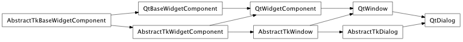
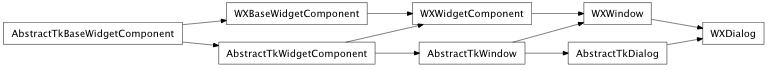

Bases: enaml.components.window.Window
A Window subclass which adds modal style behavior.
The basic dialog has no buttons, but provides methods for the accept and reject behavior for the dialog.
A read only property which will be True when the dialog is open, False otherwise.
Fired when the dialog is opened.
Fired when the dialog is closed. The event payload will be the dialog result.
A read only property which is set to the result of the dialog; ‘rejected’ if rejected() was called or the window was closed via the ‘x’ window button, ‘accepted’ if accept() was called. The result is set before the ‘closed’ event is fired.
An enum which indicates the modality of the dialog. One of ‘application_modal’ or ‘window_modal’. The default value is ‘application_modal’. Changes to this attribute after the dialog is shown will have no effect.
Overridden parent class trait.
Make the dialog visible on the screen. Overridden from the parent class to properly handle Dialog semantics.
If the dialog is not already fully initialized, then the ‘setup’ method will be called prior to making the dialog visible.
| Parameters: | parent (native toolkit widget, optional) – Provide this argument if the dialog should have another widget as its logical parent. This may help with stacking order and/or visibility hierarchy depending on the toolkit backend. |
|---|
Close the dialog and set the result to accepted.
Call this method to trigger the same behavior as clicking on an Ok button.
Close the dialog and set the result to rejected.
Call this method to trigger the same behavior as clicking on a Cancel button.
alias of __NoInterface__

Bases: enaml.backends.qt.qt_window.QtWindow, enaml.components.dialog.AbstractTkDialog
A Qt implementation of a Dialog.
This class creates a simple top-level dialog.

Bases: enaml.backends.wx.wx_window.WXWindow, enaml.components.dialog.AbstractTkDialog
A wxPython implementation of a Dialog.
WXDialog uses a wx.Dialog to create a simple top-level dialog.